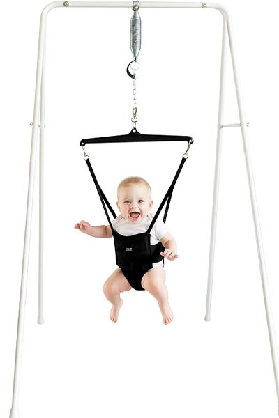

Johnny Jumper
Contents |
Abstract
This project centers around creating a device that can facilitate exercise while providing support to a child with a genetic condition. Noah(11 months old) has 1p36 Deletion Syndrome, which results in Hypotonia (low muscle development). The Jumper is a device intended to allow him to exercise and develop stronger leg muscles, while also providing him structure and support for his head and back. This device needs to be adjustable and durable, so as to remain useful as he grows and develops. This device is necessary to help Noah develop the muscles required to walk on his own.
Team members
- From Left to Right: Ethan Lewis, Evan Hildner, Hayden Townshend, Zachary Massey
Acknowledge help of others
- other
Problem Statement/overview of the need
For this project, we are creating a more advanced "Johnny Jumper" for Noah. Your typical one that you can buy in stores does not accommodate Noah's size. Noah was born with IP36 deletion, which means he will be slow to reach motor milestones such as walking. He has a hard time being mobile, and has to be propped up in order to sit. Because of this, we were tasked to create a modified jumper in order to help him gain strength, learn to stand/walk, and most importantly feel included.
Design Specifications
Below are some design specifications that MUST be met in our final design:
- The design must allow Noah to bounce up and down (allow him to have slight contact with the ground)
- The design will allow Noah to swing back and forth slightly.
- The family wishes for Noah to be elevated so he feels like he is a part of the family.
- Due to Noah's condition, he cannot fully support every part of his body; therefore, we must choose the option that allows us to implement a sturdy and supportive structure. (Back must be supported and the design must be very customizable by the family)
- Noah's current weight is 25 lbs and we were asked to make the design useable up to 40 lbs. (Again, the design must be easily customizable by the family)
- Noah's current height is 28 inches and we were asked to make the design useable for a reasonable period of time after more growth has taken place.
- This was not specifically asked for, but the design must be fairly compact and ascetically pleasing, for it will be placed in a visible location of the house.
- The device must be fairly mobile (must fit through most doors and have swivel casters).
Background research
1. What exists already, similar products
- When one researches similar products, three main Johny Jump-Up variations are often found.
1.) Doorway Jumper: (Range: $40-$100)

2.) Jumper with Stand: (Range: $90-$150)

3.) Floor-Based Jumper: (Range: $90-$120)
When considering each variation of the Johnny Jumper, at some point, each one deviates from the desired finished product we have in mind.
Conceptual Design
Design Concept 1: Classic Jumper (Cables: tension)

Motion: Up/Down, Seat: Versatile(Hard/Soft), Mobility: Stationary, Assembly: Easy, Components: Minimal, Manufacturing: intermediate.
Design Concept 2: Swing and Jumper (Spring: Compression)

Motion: Back/Forth/Up/Down, Assembly: Easy, Adjustable: Height, Seat: Versatile(hard/soft), Mobility: Stationary, Components: Average, Manufacturing: Beginner
Design Concept 3: Bouncy Chair (Spring: Compression)
Motion: Back/Forth/Up/Down, Assembly: Easy, Adjustable: Height, Seat: Versatile(hard/soft), Mobility: Moveable, Components: Average, Manufacturing: Intermediate.
Design Concept 4: Swing and Jumper(Spring: Tension)
Motion: Back/Forth/Up/Down, Assembly: Intermediate, Adjustable: Height/Rotation, Seat: soft, Mobility: Moveable, Manufacturing Intermediate. Dimension(inches)
Evaluate concepts/select candidate
| Description | Classic Jumper | Bouncy Chair | Swing/Jumper: compression | Swing/Jumper: Tension |
|---|---|---|---|---|
| Safety | 9 | 9 | 7 | 8 |
| Simplicity | 7 | 6 | 5 | 6 |
| Mobility | 4 | 7 | 3 | 7 |
| Family Needs | 10 | 10 | 10 | 10 |
| Ease of use | 8 | 8 | 7 | 6 |
| Parts | 9 | 7 | 6 | 7 |
| Adjustability | 7 | 8 | 6 | 7 |
| Manufacturing | 6 | 7 | 6 | 7 |
| Aesthetics | 7 | 3 | 6 | 7 |
| Customizability | 3 | 7 | 6 | 8 |
| Total Average | 7 | 7.2 | 6.2 | 7.3 |
As seen as the values above, they are are pretty equal in value. However one of them was greater than all of them. That was design 4.
This design maybe more complex, and few more parts, however it meets the parents needs being a jumper plus more.
In addition to: easy adjustable height/rotation (allows the user to choose either swing or jump), no 3D printed components, strong structure, and no elastic cables.
Detailed Design
This section will describe a detailed design process
Description of selected design
Detailed description of selected design
Analysis
Describe three types of analysis to be performed on the design
Engineering analysis 1
SPRING ANALYSIS
Engineering analysis 2
Engineering analysis 3
CAD Drawings
Insert drawings of all parts and the assembly
Bill of Materials
qty, item, description, source, part number, price
Bill
| ITEM | QTY | DESCRIPTION | SOURCE | PART # | PRICE |
|---|---|---|---|---|---|
| item1 | 9 | 9 | 7 | 8 | |
| item 2 | 7 | 6 | 5 | 6 | |
| item 3 | 4 | 7 | 3 | 7 | |
| item 4 | 10 | 10 | 10 | 10 | |
| itme 5 | 8 | 8 | 7 | 6 | |
| item 6 | 9 | 7 | 6 | 7 | |
| item 7 | 7 | 8 | 6 | 7 | |
| item 8 | 6 | 7 | 6 | 7 | |
| item 9 | 7 | 3 | 6 | 7 | |
| item 10 | 3 | 7 | 6 | 8 | |
| Total Price | $$ |
Assembly Instructions
Fabrication Process
Insert pictures of fabrication process
Testing and implementation
Describe testing, delivery, how used/received by the family
Photos of Completed design
Insert pictures of the final product
Instructions for safe use
Provide a clear summary of safe use for the family. Do not use the device unless supervised by an adult that has been fully understood the safe use of this product.